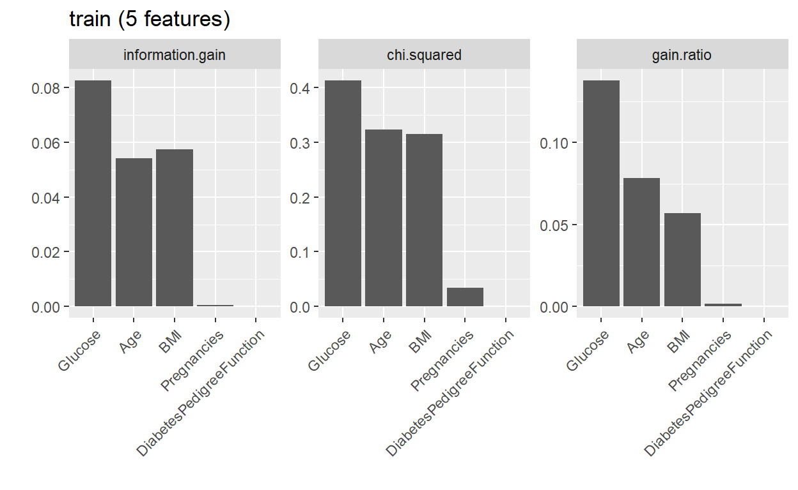
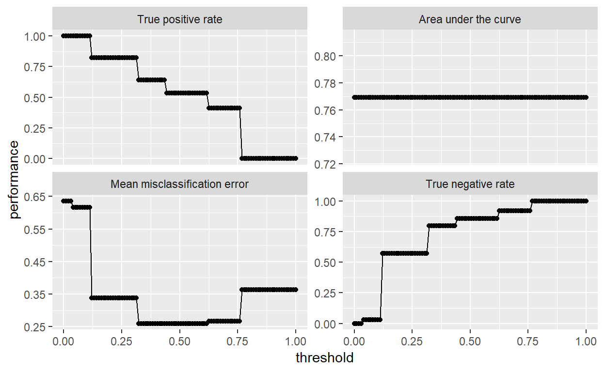

I personally like to use mlr to conduct my machine learning tasks but you could just as well use any other library to your liking.
First let’s load the relevant libraries:
mlrfor the machine learning algorithmsFSelectorfor Feature Selection. (Again you can use any Feature Selection library you wish)rpart.plotbecause I want to visualize the tree and I will be using therpartdecision tree algorithm.
library(mlr)
library(FSelector)
library(rpart.plot)
glimpse(Diabetes)
Observations: 768
Variables: 6
$ Pregnancies <fct> Yes, Yes, Yes, Yes, No, Yes, Yes...
$ Glucose <fct> Hyperglycemia, Normal, Hyperglyc...
$ BMI <fct> Obese, Overweight, Normal, Overw...
$ DiabetesPedigreeFunction <dbl> 0.627, 0.351, 0.672, 0.167, 2.28...
$ Age <int> 50, 31, 32, 21, 33, 30, 26, 29, ...
$ Outcome <fct> Positive, Negative, Positive, Ne...A look at the dataset I worked on in my previous post shows the variables we will be working with.
Train and Test Set
I am going to work with a 80/20 train/test dataset.
set.seed(1000)
train_index <- sample(1:nrow(Diabetes), 0.8 * nrow(Diabetes))
test_index <- setdiff(1:nrow(Diabetes), train_index)
train <- Diabetes[train_index,]
test <- Diabetes[test_index,]
list(
train = summary(train),
test = summary(test)
)
$train
Pregnancies Glucose BMI
No : 76 Hyperglycemia:149 Underweight: 10
Yes:538 Hypoglycemia : 5 Normal : 95
Normal :460 Overweight :146
Obese :363
DiabetesPedigreeFunction Age Outcome
Min. :0.0840 Min. :21.00 Positive:212
1st Qu.:0.2495 1st Qu.:24.00 Negative:402
Median :0.3865 Median :29.00
Mean :0.4733 Mean :33.46
3rd Qu.:0.6268 3rd Qu.:41.00
Max. :2.2880 Max. :81.00
$test
Pregnancies Glucose BMI
No : 35 Hyperglycemia: 43 Underweight: 5
Yes:119 Hypoglycemia : 0 Normal : 13
Normal :111 Overweight : 34
Obese :102
DiabetesPedigreeFunction Age Outcome
Min. :0.0780 Min. :21.00 Positive:56
1st Qu.:0.2263 1st Qu.:24.00 Negative:98
Median :0.3455 Median :29.00
Mean :0.4663 Mean :32.35
3rd Qu.:0.6065 3rd Qu.:39.75
Max. :2.4200 Max. :67.00 - The training set shows our target variable having 212 positive outcomes and 402 negative outcomes.
- The test set shows that we have 56 positive outcomes and 98 negative outcomes.
There is an obvious class imbalance here with our target variable and because it is skewed towards ‘Negative’ (No Diabetes) we will find in harder to build a predictive model for a ‘Positive’ Outcome.
You can solve this issue with rebalancing the classes which will involve resampling. But, I will resort adjusting the probability threshold in the prediction stage. I do not know if this would solve any underlying issues but threshold adjustment allows you to alter a prediction to give a completely different outcome.
Decision Tree
Task
(dt_task <- makeClassifTask(data=train, target="Outcome"))
Supervised task: train
Type: classif
Target: Outcome
Observations: 614
Features:
numerics factors ordered functionals
2 3 0 0
Missings: FALSE
Has weights: FALSE
Has blocking: FALSE
Has coordinates: FALSE
Classes: 2
Positive Negative
212 402
Positive class: PositiveFirst we have to make a classification task with our training set. This is where we can define which type of machine learning problem we’re trying to solve and define the target variable.
As we can see, the Positive level of Outcome has defaulted to the Positive class in the machine learning task. This is not always the case. You can change it by specifying Positive=x (where ‘x’ is the target level of the variable you want to predict). In this case we want to predict the people that have diabetes (namely, the Positive level of the Outcome variable).
Learner
(dt_prob <- makeLearner('classif.rpart', predict.type="prob"))
Learner classif.rpart from package rpart
Type: classif
Name: Decision Tree; Short name: rpart
Class: classif.rpart
Properties: twoclass,multiclass,missings,numerics,factors,ordered,prob,weights,featimp
Predict-Type: prob
Hyperparameters: xval=0After creating a classification task we need to make a learner that will later take our task to learn the data. I have chosen the rpart decision tree algorithm. This is the Recursive Partitioning Decision Tree.
Feature Selection
In order to select which features provide the best chance to predict Positive, the generateFilterValuesData gives us a score for each feature. This can then be plotted with PlotFilterValues. The score for each variable is dependednt upon which criteria you choose. Here I choose Information Gain, Chi-squared and Gain Ratio as my criteria.
listFilterMethods()
id package
1 anova.test
2 auc
3 carscore care
4 cforest.importance party
5 chi.squared FSelector
6 gain.ratio FSelector
7 information.gain FSelector
8 kruskal.test
9 linear.correlation
10 mrmr mRMRe
11 oneR FSelector
12 permutation.importance
13 randomForest.importance randomForest
14 randomForestSRC.rfsrc randomForestSRC
15 randomForestSRC.var.select randomForestSRC
16 ranger.impurity ranger
17 ranger.permutation ranger
18 rank.correlation
19 relief FSelector
20 symmetrical.uncertainty FSelector
21 univariate.model.score
22 variance
desc
1 ANOVA Test for binary and multiclass ...
2 AUC filter for binary classification ...
3 CAR scores
4 Permutation importance of random fore...
5 Chi-squared statistic of independence...
6 Entropy-based gain ratio between feat...
7 Entropy-based information gain betwee...
8 Kruskal Test for binary and multiclas...
9 Pearson correlation between feature a...
10 Minimum redundancy, maximum relevance...
11 oneR association rule
12 Aggregated difference between feature...
13 Importance based on OOB-accuracy or n...
14 Importance of random forests fitted i...
15 Minimal depth of / variable hunting v...
16 Variable importance based on ranger i...
17 Variable importance based on ranger p...
18 Spearman's correlation between featur...
19 RELIEF algorithm
20 Entropy-based symmetrical uncertainty...
21 Resamples an mlr learner for each inp...
22 A simple variance filter
generateFilterValuesData(dt_task, method = c("information.gain","chi.squared", "gain.ratio")) %>%
plotFilterValues() 
The generateFeatureImportanceData function also works in a similar fashion. Execpt it will show us the importance of each feature according to a given performance criteria. I have chosen True Positive Rate and Area Under the Curve.
generateFeatureImportanceData(task=dt_task, learner = dt_prob,measure = tpr, interaction = FALSE)
FeatureImportance:
Task: train
Interaction: FALSE
Learner: classif.rpart
Measure: tpr
Contrast: function (x, y) x - y
Aggregation: function (x, ...) UseMethod("mean")
Replace: TRUE
Number of Monte-Carlo iterations: 50
Local: FALSE
Pregnancies Glucose BMI DiabetesPedigreeFunction
tpr 0 -0.1869811 -0.1443396 -0.06339623
Age
tpr -0.06896226
generateFeatureImportanceData(task=dt_task, learner = dt_prob,measure = auc, interaction = FALSE)
FeatureImportance:
Task: train
Interaction: FALSE
Learner: classif.rpart
Measure: auc
Contrast: function (x, y) x - y
Aggregation: function (x, ...) UseMethod("mean")
Replace: TRUE
Number of Monte-Carlo iterations: 50
Local: FALSE
Pregnancies Glucose BMI DiabetesPedigreeFunction
auc 0 -0.1336535 -0.07317023 -0.01907362
Age
auc -0.08251478As we can see with the above output: * The information gain and gain ratio show a score of zero or a low score for Pregnancies. * generateFeatureImportanceData shows a score of zero for Pregnancies when looking at the TPR and AUC as a performance measure.
Looking at all the evidence, Pregnancies will be the only variable I discard. The other variables still show predictive capabilities across certain criteria.
Seeing as how we are only left with 4 features, there can be a risk of underfitting my model. The other argument for this would be that I do not have many rows of data to deal with in the first place. This is ongoing discussion on what is the right amount of data and features (Curse of Dimensionality).
Looking below I have taken Pregnancies out of our train and test sets and made a new classification task with our new training set.
set.seed(1000)
train <- select(train, -Pregnancies)
test <- select(test, -Pregnancies)
list(
train = summary(train),
test = summary(test)
)
$train
Glucose BMI DiabetesPedigreeFunction
Hyperglycemia:149 Underweight: 10 Min. :0.0840
Hypoglycemia : 5 Normal : 95 1st Qu.:0.2495
Normal :460 Overweight :146 Median :0.3865
Obese :363 Mean :0.4733
3rd Qu.:0.6268
Max. :2.2880
Age Outcome
Min. :21.00 Positive:212
1st Qu.:24.00 Negative:402
Median :29.00
Mean :33.46
3rd Qu.:41.00
Max. :81.00
$test
Glucose BMI DiabetesPedigreeFunction
Hyperglycemia: 43 Underweight: 5 Min. :0.0780
Hypoglycemia : 0 Normal : 13 1st Qu.:0.2263
Normal :111 Overweight : 34 Median :0.3455
Obese :102 Mean :0.4663
3rd Qu.:0.6065
Max. :2.4200
Age Outcome
Min. :21.00 Positive:56
1st Qu.:24.00 Negative:98
Median :29.00
Mean :32.35
3rd Qu.:39.75
Max. :67.00 Another problem is that in the Glucose category, ‘Hypoglycemia’ has only 5 representations in the whole dataset. When we go for cross validation this will be an issue because almost definitely this level will absent in any of the folds. This will disallow the model to be properly trained later. Therefore we need to remove Hypoglycemia from both datsets:
train <- filter(train, Glucose!='Hypoglycemia') %>% droplevels()
test <- filter(test, Glucose!='Hypoglycemia') %>% droplevels()
list(
train = summary(train),
test = summary(test)
)
$train
Glucose BMI DiabetesPedigreeFunction
Hyperglycemia:149 Underweight: 10 Min. :0.084
Normal :460 Normal : 94 1st Qu.:0.249
Overweight :145 Median :0.388
Obese :360 Mean :0.474
3rd Qu.:0.627
Max. :2.288
Age Outcome
Min. :21.0 Positive:210
1st Qu.:24.0 Negative:399
Median :29.0
Mean :33.5
3rd Qu.:41.0
Max. :81.0
$test
Glucose BMI DiabetesPedigreeFunction
Hyperglycemia: 43 Underweight: 5 Min. :0.0780
Normal :111 Normal : 13 1st Qu.:0.2263
Overweight : 34 Median :0.3455
Obese :102 Mean :0.4663
3rd Qu.:0.6065
Max. :2.4200
Age Outcome
Min. :21.00 Positive:56
1st Qu.:24.00 Negative:98
Median :29.00
Mean :32.35
3rd Qu.:39.75
Max. :67.00 As we now have new datasets we need to make a new classification task based on the new training set.
(dt_task <- makeClassifTask(data=train, target="Outcome"))
Supervised task: train
Type: classif
Target: Outcome
Observations: 609
Features:
numerics factors ordered functionals
2 2 0 0
Missings: FALSE
Has weights: FALSE
Has blocking: FALSE
Has coordinates: FALSE
Classes: 2
Positive Negative
210 399
Positive class: PositiveHyper Parameter Tuning
Now any machine learning algorithm will require us to tune the hyperparameters at our own discretion. Tuning hyperparameters is the process of selecting a value for machine learning parameter with the target of obtaining your desired level of performance.
Tuning a machine learning algorithm in mlr involves the following procedures: * Define a search space. * Define the optimization algorithm (aka tuning method). * Define an evaluation method (i.ee resampling strategy and a performance measure).
Search Space
So definng a search space is when specify parameters for a given feature/variable. As we are focusing on decision trees in this post, using the getParamSet(learner) function, we can obtain the hyperparameters for the algorith we want.
We need the parameters for the rpart learner.
getParamSet("classif.rpart")
Type len Def Constr Req Tunable Trafo
minsplit integer - 20 1 to Inf - TRUE -
minbucket integer - - 1 to Inf - TRUE -
cp numeric - 0.01 0 to 1 - TRUE -
maxcompete integer - 4 0 to Inf - TRUE -
maxsurrogate integer - 5 0 to Inf - TRUE -
usesurrogate discrete - 2 0,1,2 - TRUE -
surrogatestyle discrete - 0 0,1 - TRUE -
maxdepth integer - 30 1 to 30 - TRUE -
xval integer - 10 0 to Inf - FALSE -
parms untyped - - - - TRUE -We can see that there are 10 hyperparameters for rpart and only xval is untunable (i.e it cannot be changed).
Here is an explanation of the above parameters:
minsplit- The minimum number of observations in a node for which the routine will even try to compute a split. The default is \(20\). Tuning this parameter can save computation time since smaller nodes are almost always pruned away by cross-validation.
minbucket- Minimum number of observations in a terminal node. The default is
minspit/3(although I do not know if this is the optimal choice).
- Minimum number of observations in a terminal node. The default is
maxcompete- This will show you the the variable that gave the best split at a node if set at \(1\). If set larger than 1, then it will give you the second, third etc.. best. It has no effect on computation time and minimal effect on memory used.
maxdepth- This controls how deep the tree can be built.
cp- This is the complexity parameter. The lower it is the larger the tree will grow. A
cp=1will result in no tree at all. This also helps in pruning the tree. Whatever the value ofcpwe need to be cautious about overpruning the tree. Higher complexity parameters can lead to an overpruned tree. I personally find that a very high complexity parameter value (in my case above 0.3) leads to underfitting the tree due to overpruning but this also depends on teh number of features you have.
- This is the complexity parameter. The lower it is the larger the tree will grow. A
I have not used surrogate variables before so I will omit them in this case. I just do not want to proceed with them at this point without an adequate understanding to explain myself.
So now we need to set the hyperparameters to what we want. Remeber there is no one right answer exactly. We need to define the space and run the search to automatically find which values of the hyperparameters will give us the best result ACCORDING TO THE SPACE WE DEFINED. This means the performance may or may not be affected with a change (big or small) in the hyperparameters.
So either go with your gut if you’re pressed for time or define a large space for the hyperparameters and if you have a powerful machine and outstanding patience, let mlr do the heavy lifting.
dt_param <- makeParamSet(
makeDiscreteParam("minsplit", values=seq(5,10,1)),
makeDiscreteParam("minbucket", values=seq(round(5/3,0), round(10/3,0), 1)),
makeNumericParam("cp", lower = 0.01, upper = 0.05),
makeDiscreteParam("maxcompete", values=6),
makeDiscreteParam("usesurrogate", values=0),
makeDiscreteParam("maxdepth", values=10)
)For the model I am using I will set:
minsplit= [5,6,7,8,9,10]minbucket= [5/3, 10/3]cp= [0.01, 0.05]maxcompete= 6usesurrogate= 0maxdepth= 10
The main reason I am not defining huge spaces is that I did before and it took about 4 hours for it to run and had 100,000 combinations of the hyperparameters. That is too much time for me personally unless I am doing a project that will hugely benefit from it.
Optimization Algorithm
One of the standard but slow algorithms available to us is Grid Search to choose an appropriate set of parameters.
ctrl = makeTuneControlGrid()This is how we specify that we would like to run a grid search. With the space that we specified above, we get 60 possible combinations in the case of dt_param.
Evaluating Tuning with Resampling
After specifying the above, we can now conduct the tuning process. We define a resample strategy and make note of the performance.
We set the resampling strategy to a 4-fold Cross-Validation with stratified sampling. Stratified Sampling is useful if you have class imbalances in the target variable. It will try to have the same number of classes in each fold.
rdesc = makeResampleDesc("CV", iters = 3L, stratify=TRUE)Tuning
We can now use tuneParams to show us what combination of hyperparameter values as specified by us will give us the optimal result.
In measures you can define which performance criteria you would like to see. I also want to get the standard deviation of the True Positive Rate from the test set during the cross validation. This added measure should give us an indication of how large the spread is between each fold for this measure.
set.seed(1000)
(dt_tuneparam <- tuneParams(learner=dt_prob,
resampling=rdesc,
measures=list(tpr,auc, fnr, mmce, tnr, setAggregation(tpr, test.sd)),
par.set=dt_param,
control=ctrl,
task=dt_task,
show.info = TRUE)
)
Tune result:
Op. pars: minsplit=9; minbucket=2; cp=0.0144; maxcompete=6; usesurrogate=0; maxdepth=10
tpr.test.mean=0.6095238,auc.test.mean=0.7807376,fnr.test.mean=0.3904762,mmce.test.mean=0.2725780,tnr.test.mean=0.7894737,tpr.test.sd=0.0704698Upon running the tuner, we see the 120 possible combinations of the hyparameters we set. The final result at the bottom of the output (i.e [Tune] Result:...) gives us our optimal combination. This will change everytime you run it. As long as you can see similar performance results there should be no danger in going ahead with the current dataset. If the performance results begin to diverge too much, the data may be inadequate.
In the optimal hyperparameters, the standard deviation of the True Positive Rate in the test set is 0.0704698, which is relatively low and can give us an idea of the True Positive Rate we will obtain later when predicting. If the TPR from the prediction is close or in-between 1 standard deviation from the one obtained during cross validation, it is another indication that our model works well.
NOTE tuneParams knows which performance measure to minimize and maximize. So for example, it knows to maximize accuracy and minimize error rate (mmce).
On a side not as I mentioned earlier, I defined a large search space and it took about 4 hours to finish and ended up with 100,000 combnations. This was the result:
[Tune] Result: minsplit=17; minbucket=7; cp=0.0433; maxcompete=4; usesurrogate=0; maxdepth=7 : tpr.test.mean=0.6904762,auc.test.mean=0.7277720,f1.test.mean=0.6156823,acc.test.mean=0.7283265,mmce.test.mean=0.2716735,timepredict.test.mean=0.0000000,tnr.test.mean=0.7460928
Although the TPR is higher, I am going to use my previous hyperpaarmeters because it is less computationally expensive.
Optimal HyperParameters
list(
`Optimal HyperParameters` = dt_tuneparam$x,
`Optimal Metrics` = dt_tuneparam$y
)
$`Optimal HyperParameters`
$`Optimal HyperParameters`$minsplit
[1] 9
$`Optimal HyperParameters`$minbucket
[1] 2
$`Optimal HyperParameters`$cp
[1] 0.01444444
$`Optimal HyperParameters`$maxcompete
[1] 6
$`Optimal HyperParameters`$usesurrogate
[1] 0
$`Optimal HyperParameters`$maxdepth
[1] 10
$`Optimal Metrics`
tpr.test.mean auc.test.mean fnr.test.mean mmce.test.mean
0.60952381 0.78073756 0.39047619 0.27257800
tnr.test.mean tpr.test.sd
0.78947368 0.07046976 Using dt_tuneparam$x we can extract the optimal values and dt_tuneparam$y gives us the corresponding performance measures.
setHyperPars will tune the learner with its optimal values.
dtree <- setHyperPars(dt_prob, par.vals = dt_tuneparam$x)Model Training
We finally get to the stage of training our learner.
set.seed(1000)
dtree_train <- train(learner=dtree, task=dt_task)
getLearnerModel(dtree_train)
n= 609
node), split, n, loss, yval, (yprob)
* denotes terminal node
1) root 609 210 Negative (0.34482759 0.65517241)
2) Glucose=Hyperglycemia 149 46 Positive (0.69127517 0.30872483)
4) BMI=Obese 117 28 Positive (0.76068376 0.23931624) *
5) BMI=Normal,Overweight 32 14 Negative (0.43750000 0.56250000) *
3) Glucose=Normal 460 107 Negative (0.23260870 0.76739130)
6) Age>=28.5 215 78 Negative (0.36279070 0.63720930)
12) BMI=Underweight,Overweight,Obese 184 77 Negative (0.41847826 0.58152174)
24) DiabetesPedigreeFunction>=0.5275 61 23 Positive (0.62295082 0.37704918) *
25) DiabetesPedigreeFunction< 0.5275 123 39 Negative (0.31707317 0.68292683) *
13) BMI=Normal 31 1 Negative (0.03225806 0.96774194) *
7) Age< 28.5 245 29 Negative (0.11836735 0.88163265) *
rpart.plot(dtree_train$learner.model, roundint=FALSE, varlen=3, type = 3, clip.right.labs = FALSE, yesno = 2)
rpart.rules(dtree_train$learner.model, roundint = FALSE)
Outcome
0.24 when Glucose is Hyperglycemia & BMI is Obese
0.38 when Glucose is Normal & BMI is Underweight or Overweight or Obese & Age >= 29 & DiabetesPedigreeFunction >= 0.53
0.56 when Glucose is Hyperglycemia & BMI is Normal or Overweight
0.68 when Glucose is Normal & BMI is Underweight or Overweight or Obese & Age >= 29 & DiabetesPedigreeFunction < 0.53
0.88 when Glucose is Normal & Age < 29
0.97 when Glucose is Normal & BMI is Normal & Age >= 29 After training the decision tree I was able to plot it with the rpart.plot function and I can easily see the rules of the tree with rpart.rules. Since mlr is a wrapper for machine learning algorithms I can customize to my likinig and this is just one example.
Model Prediction (Testing)
We now pass the trained learner to be used to make predictions with our test data.
set.seed(1000)
(dtree_predict <- predict(dtree_train, newdata = test))
Prediction: 154 observations
predict.type: prob
threshold: Positive=0.50,Negative=0.50
time: 0.00
truth prob.Positive prob.Negative response
1 Negative 0.3170732 0.6829268 Negative
2 Positive 0.6229508 0.3770492 Positive
3 Negative 0.4375000 0.5625000 Negative
4 Negative 0.3170732 0.6829268 Negative
5 Positive 0.7606838 0.2393162 Positive
6 Negative 0.1183673 0.8816327 Negative
... (#rows: 154, #cols: 4)We get 6 random rows showing the predicted outcome against the actual outcome with its respective probability score for both Positive and Negative. Th threshold for classifying each row is 50/50. This is by default but can be changed later (which I will do).
dtree_predict %>%
calculateROCMeasures()
predicted
true Positive Negative
Positive 30 26 tpr: 0.54 fnr: 0.46
Negative 14 84 fpr: 0.14 tnr: 0.86
ppv: 0.68 for: 0.24 lrp: 3.75 acc: 0.74
fdr: 0.32 npv: 0.76 lrm: 0.54 dor: 6.92
Abbreviations:
tpr - True positive rate (Sensitivity, Recall)
fpr - False positive rate (Fall-out)
fnr - False negative rate (Miss rate)
tnr - True negative rate (Specificity)
ppv - Positive predictive value (Precision)
for - False omission rate
lrp - Positive likelihood ratio (LR+)
fdr - False discovery rate
npv - Negative predictive value
acc - Accuracy
lrm - Negative likelihood ratio (LR-)
dor - Diagnostic odds ratioSo now we have the confusion matrix for our model. We see that it does an excellent job in predicting a Negative Outcome but does poorly with a Positive Outcome. This is inherently due to the class imbalance in our dataset. This is why thresholding is an easier tactic to get our preferred model. Of course it would be better if we had balanced classes and more rows of observations in our data but this is not always a choice or reality.
To see the performance of our model more coherently, we can use the following code I wrote to see it in a presentable manner.
Performance <- performance(dtree_predict, measures = list(tpr,auc,mmce, acc,tnr)) %>%
as.data.frame(row.names = c("True Positive","Area Under Curve", "Mean Misclassification Error","Accuracy","True Negative Rate"))
Performance %>% kable(caption="Performance of Decision Tree",digits = 2, format = 'html', col.names = "Result")| Result | |
|---|---|
| True Positive | 0.54 |
| Area Under Curve | 0.77 |
| Mean Misclassification Error | 0.26 |
| Accuracy | 0.74 |
| True Negative Rate | 0.86 |
These metrics are quite satisfactory. But we can still achieve a higher TPR as I describe below. In certain cases including this, the TPR will be the most important and not the TNR. But in my view, I need to achieve a satisfactory TNR because if not, my misclassification (error) rate will be high. I do not think that telling someone the wrong diagnosis is acceptable.
Thresholding
(dtree_threshold <-
generateThreshVsPerfData(dtree_predict, measures = list(tpr,auc, mmce,tnr)) %>%
plotThreshVsPerf() +
geom_point()
)
My personal goal for this model will be to obtain an acceptable and satisfactory True Positive Rate and True Negative Rate. Since the AUC remains the same across all thresholds we need not concern ourselves with it. By changing the threshold I am deliberately creating a biased model but this is a normal machine learning problem. The Bias-Variance Tradeoff is so common and we need to learn to navigate throught it. It is a whole other topic and anyone doing machine learning will need some knowledge of it.
Below you will see 3 different thresholds:
The maximum threshold in which our TPR is below 100%.
The minimum threshold in which our TPR is above 80%.
The average of the two thresholds.
The maximum threshold in which our TNR is above 70%.
list(
`TPR Threshold for 100%` = tpr_threshold100 <-
dtree_threshold$data$threshold[
which.max(dtree_threshold$data$performance[
dtree_threshold$data$measure=="True positive rate"]<1)],
`TPR Threshold for 80%` = tpr_threshold80 <-
dtree_threshold$data$threshold[
which.min(dtree_threshold$data$performance[
dtree_threshold$data$measure=="True positive rate"]>0.80)],
`Average Threshold` = avg_threshold <- mean(c(tpr_threshold100,tpr_threshold80)),
`TNR Threshold for 80%` = tnr_threshold80 <-
dtree_threshold$data$threshold[
which.max(dtree_threshold$data$performance[
dtree_threshold$data$measure=="True negative rate"]>0.70)]
)$TPR Threshold for 100% [1] 0.1212121
$TPR Threshold for 80% [1] 0.3232323
$Average Threshold [1] 0.2222222
$TNR Threshold for 80% [1] 0.3232323
Using avg_threhsold to predict on our model one more time we can get the following performance metrics. However looking at the thresholds from the plot and the ones I defined above, our True Negative Rate is going to take a big hit.
DecisionTree <- dtree_predict %>%
setThreshold(avg_threshold)
(dt_performance <-
DecisionTree %>%
performance(measures = list(tpr,auc, mmce,tnr))
)
tpr auc mmce tnr
0.8214286 0.7693149 0.3376623 0.5714286 Our TPR is now . This is a huge difference from a 50/50 threshold. Our TNR has reduced to but this is a consequence of biasing our model towards the TPR. I explain below looking at the new confusion matrix.
(dt_cm <-
DecisionTree %>%
calculateROCMeasures()
)
predicted
true Positive Negative
Positive 46 10 tpr: 0.82 fnr: 0.18
Negative 42 56 fpr: 0.43 tnr: 0.57
ppv: 0.52 for: 0.15 lrp: 1.92 acc: 0.66
fdr: 0.48 npv: 0.85 lrm: 0.31 dor: 6.13
Abbreviations:
tpr - True positive rate (Sensitivity, Recall)
fpr - False positive rate (Fall-out)
fnr - False negative rate (Miss rate)
tnr - True negative rate (Specificity)
ppv - Positive predictive value (Precision)
for - False omission rate
lrp - Positive likelihood ratio (LR+)
fdr - False discovery rate
npv - Negative predictive value
acc - Accuracy
lrm - Negative likelihood ratio (LR-)
dor - Diagnostic odds ratioWe notice the other following changes:
The TNR has reduced to 57 % due to the threshold difference.
The FPR has increased to 43 %. This means that the model has an increased likedlihood of a Type 1 Error in which it will detect diabetes when it is actually absent. This is a sacrifice we needed to make to get a higher TPR.
The Accuracy has reduced to 66 %. This is another consequence of changing the threshold. This is not a cause for concern because our model does what I intended for it to do - Have a high True Positive Rate. Accuracy is not an adequate measure of model performance if we only care about the accurate prediction of a certain outcome. This is the case most of the time but even then you still need to dig deep into the model performance.
Performance_threshold <- performance(DecisionTree, measures = list(tpr,auc, mmce, acc, tnr)) %>%
as.data.frame(row.names = c("True Positive","Area Under Curve", "Mean Misclassification Error","Accuracy","True Negative Rate"))
Performance_threshold %>% kable(caption=paste("Performance of Decision Tree\n\nAfter Thresholding to",(avg_threshold*100) %>% round(0),'%'),digits = 2, format = 'html', col.names = 'RESULT')| RESULT | |
|---|---|
| True Positive | 0.82 |
| Area Under Curve | 0.77 |
| Mean Misclassification Error | 0.34 |
| Accuracy | 0.66 |
| True Negative Rate | 0.57 |